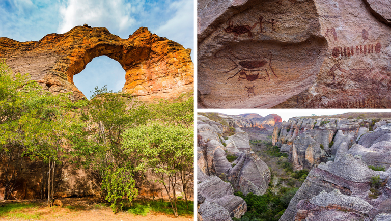
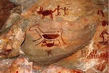

SERRA DA CAPIVARA
Piauí

Piauí
O Parque Nacional Serra da Capivara é uma unidade de conservação brasileira de proteção integral à natureza que ocupa parte dos municípios de São Raimundo Nonato, João Costa, Brejo do Piauí e Coronel José Dias. Esta área tem a maior e mais antiga concentração de sítios pré-históricos da América.
O Parque Nacional Serra da Capivara é um local de conservação arqueológica com uma grande riqueza de vestígios que se conservaram durante milênios. O patrimônio cultural e os ecossistemas locais estão intimamente ligados, pois a conservação do primeiro depende do equilíbrio desses ecossistemas. O equilíbrio entre os recursos naturais é o condicionante na conservação dos recursos culturais e foi o que orientou o zoneamento, a gestão e o uso do Parque pelo poder público.
ESTAÇÃO SECA - Vai de maio a setembro e é considerada uma das melhores épocas para ir à a Serra da Capivara. Durante essa temporada, as chuvas são escassas e os dias costumam ser ensolarados, com temperaturas mais amenas. Isso cria um ambiente perfeito para explorar os diversos sítios arqueológicos a céu aberto e para fazer trilhas e caminhadas no Parque, sem preocupações com chuvas. Além disso, a baixa umidade nesse período torna a sensação térmica mais agradável durante o dia. À noite, especialmente em junho, julho e agosto, faz um friozinho agradável.
ESTAÇÃO CHUVOSA - Vai de outubro a abril e é caracterizada pelo céu encoberto e pelas chuvas mais frequentes e intensas. Apesar disso, esse período também tem seus atrativos, como a exuberante vegetação verdejante e algumas cachoeiras que reaparecem. No entanto, é importante estar preparado para enfrentar trilhas mais enlameadas e escorregadias, e a possibilidade de alguns passeios serem limitados ou até mesmo suspensos devido às condições climáticas. Se puder ir à Serra da Capivara em outra época, será melhor.
ALTA E BAIXA TEMPORADA - A Serra da Capivara tende a receber mais visitantes durante a alta temporada, que corresponde aos meses de janeiro e julho, que coincidem com as férias escolares. Nesses períodos, os hotéis podem ficar mais cheios e os preços podem ser um pouco mais elevados. Portanto, se preferir evitar grandes aglomerações e desfrutar de uma experiência mais tranquila, considere viajar durante a baixa temporada.
IMPORTÂNCIA ARQUEOLÓGICA - A riqueza da Serra da Capivara não se limita apenas ao seu esplendor cênico, pois a região também possui uma significativa importância arqueológica. Ao longo dos anos, a área passou a ser considerada um patrimônio mundial de valor inestimável, com centenas de sítios arqueológicos que contam a história milenar dos povos que habitaram o Brasil. A diversidade geográfica é um dos aspectos mais fascinantes deste paraíso natural. Caminhando por diferentes formações rochosas formadas há milhões de anos, pode-se observar nitidamente a marca deixada pelo mar, que já ocupou toda a Serra. Observando com mais atenção, dá para ver o caminho percorrido por rios, riachos e cachoeiras que hoje não existem mais – alguns ainda se formam no período das chuvas.
VEGETAÇÃO - A vegetação na Serra da Capivara é um espetáculo à parte. A região é caracterizada por uma combinação harmoniosa de diferentes biomas, apresentando transições entre Caatinga, Cerrado e áreas de floresta tropical. Essa diversidade vegetal sustenta uma abundante fauna, com espécies endêmicas e ameaçadas de extinção encontrando refúgio nesse ecossistema singular. É muito interessante notar como a vegetação muda de cor nas diferentes estações do ano. Na época chuvosa, tudo fica verde, mas quando a seca aperta, tudo ganha tons marrons. Essa mudança de cores já era percebida pelos povos originários que habitaram a região: o nome Caatinga significa “floresta branca” na língua tupi-guarani.